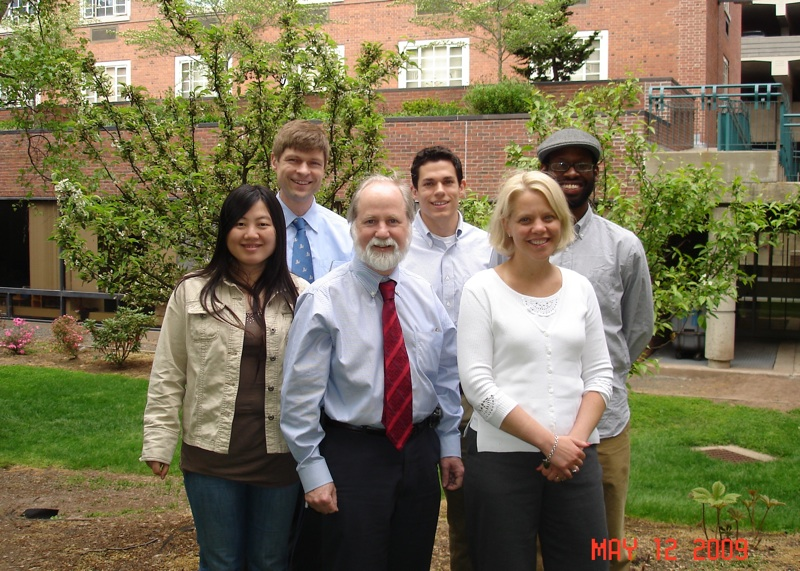

Tourette Syndrome Studies
- 
Tourette Syndrome (TS) is a chronic and impairing neurological disorder characterized by motor and phonic tics. Until recently, the only option for treating the tics of TS was medication. Although medication remains the mainstay of treatment, there is growing evidence that behavioral therapy, known as Habit Reversal Training (HRT), can be effective even for presumed involuntary tics. If HRT is effective, we are interested in learning about how it works.
To this end, we are conducting a study using electroencephalography (EEG) in order to examine how HRT produces tic reduction effects. The idea for our pilot study is based on research by British neuroscientist Deborah Serrien, who demonstrated that successful tic suppression by adults with TS was associated with higher levels of EEG coherence over the cortical areas involved in movement control. Serrien concluded that this finding reflects an adaptive mechanism of superior motor control in individuals with TS. We reasoned that if HRT is successful for tic reduction, it can also enhance the brain mechanism of motor control.
To test this hypothesis, we have been collecting EEG data before and after HRT in children with TS. So far we have analyzed the data from five 8 to 12 year old children who participated in the study and the results are encouraging. All five children demonstrated clinically meaningful symptom reduction after treatment based on the tic ratings conducted by the independent clinician. Consistent with the hypothesis of this study, the reduction of tics was paralleled by the increase in EEG alpha coherence. Even though our sample is small, we are very enthusiastic about these results.
To pursue further examination of brain mechanisms of response to behavior therapy for tics, Denis Sukhodolsky has recently received a 5 year career development award from the National Institutes of Mental Health. Because HRT is a promising but not yet proven treatment for tics, we are now conducting a randomized study of HRT and its effects on tics and EEG coherence.